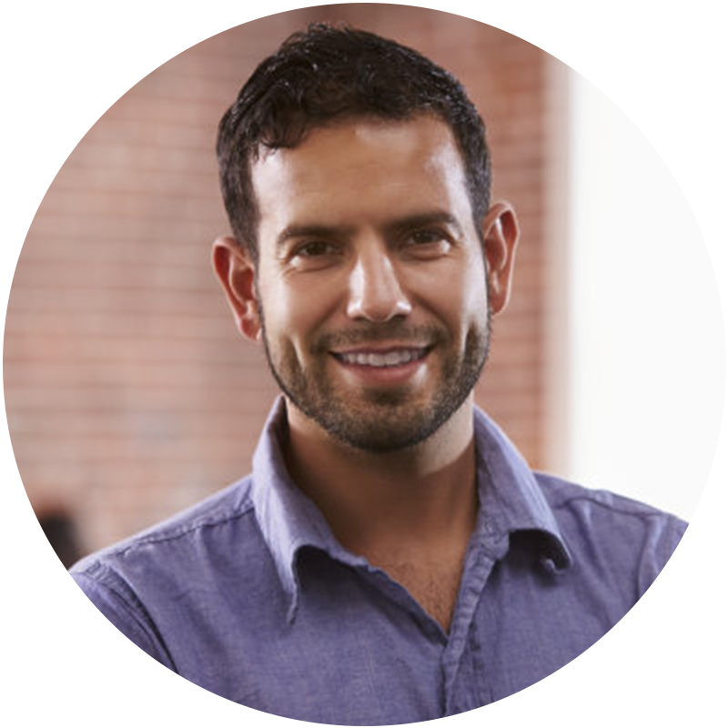

Ez a Pohod™ márka által tervezett férfi sétatalpas cipő lenyűgözte a neurológusokat – valóban megkönnyítheti a járást?
Nem lenne nagyszerű tudni, hogyan lehet a legjobban kezelni a lábfájdalmakat és a hátfájást? És mi a helyzet azzal a lehetőséggel, hogy megtudjuk, mi a baj a lábával, majd megoldjuk a lábproblémáit?
A Pohod™ jóvoltából élvezheti a legjobbat – a Pohod™ csapata által tervezett cipőpárt, amely az Ön egyedi lábproblémáira szabott.
A lábegészség rendkívül fontos...
Egy friss tanulmány szerint a magyarok mintegy 20%-a szenved erős lábfájdalomtól, és a férfiaknál ez az arány még magasabb. Ráadásul az összes felnőtt 8%-a krónikus hátfájásban szenved. Annyian nem is tudják, hogy a hát közvetlenül összefügg a lábakkal!
Ha a lábai nincsenek megfelelően igazítva, a térdei és csípői, majd a háta is helytelen pozícióba kerülnek. Ez hozzájárul a derékfájáshoz. Meglepő módon a sérült, fájó lábak közvetlenül összefüggnek a sérült, fájó háttal.
Szerencsére a Pohod™ csapata kényelmes ortopédiai cipőket fejlesztett ki, amelyek tökéletesek mindazok számára, akik nap mint nap sok órát töltenek talpukon.
Mi ez?
Ez a Pohod férfi túracipő titka
Ezek az első „vény nélkül kapható" ortopédiai cipők egyedi minőségben. A lehető legközelebb állnak egy teljesen egyedi készítésű termékhez anélkül, hogy orvoshoz kellene mennie, és az egyedi ortopédiai eszközök töredékébe kerülnek.
Stabilizálják a lábát és a bokáját a mozgás mindhárom síkján, és támogatást nyújtanak lúdtalp, sarokfájdalom, magas boltozat és egyéb lábproblémák esetén. A Pohod férfi túracipő alkalmazkodik a láb alakjához, felveszi annak pontos formáját, és csodálatos támogatást nyújt.
A Pohod™ csapata számos lábproblémával találkozott, és szakmai tudását felhasználva segít a lábfájdalomban szenvedőknek megkapni a megfelelő kezelést.
Hogyan működik a Pohod férfi túracipő
Ütéscsillapítás és boltozattámasz
Memóriahabos talpbetétek, rendkívül adaptívak, amelyek mozognak a lábával járás közben, és rengeteg ütést elnyelnek. A Pohod™ csapata által kifejlesztett biomechanikai ortopédiai talpbetét Orthaheel technológiával és mély sarokcsészével stabilizálja és támasztja a lábat, visszahelyezve azt természetes pozíciójába viselés közben.
Gondoskodjon lábairól ezzel a párnázott talppal
Biztosítsa az egyenletesebb járást, és álljon órákon át feszültség vagy egyensúlyhiány érzése nélkül. Ezek a cipők segítenek enyhíteni a sarok- és térdfájdalom szokásos okait, amelyeket a túlzott pronáció és a lúdtalp okoz.
Kiváló minőségű anyagokból készült
Ezeket a cipőket úgy tervezték, hogy kiváló minőségű összetételüknek köszönhetően sok évig kitartsanak. Tartós és puha szintetikus bőr felsőrész-anyag, amely ellenáll az éves kopásnak.
Szuperkomfortos anyag
Javítják a testtartást és megszüntetik az izomegyensúlyhiányt azáltal, hogy visszahelyezik a dőlt ujjakat eredeti helyzetükbe a csontváz megfelelő igazítása érdekében. Az anyag rugalmas és szuperkomfortos.
Amikor kipróbálja ezeket a cipőket, rájön, hogy nemcsak jelentősen javítják lábai közérzetét, hanem sokkal többet is tesznek:
Puha, varrásmentes belső bélés megakadályozza a nyomáspontokat és a bőrrel való súrlódást, kiváló kényelmet és védelmet nyújtva.
Fűző nélküli kialakítás, puha felsőrész-anyag, habot nélküli párnázás a lábfejen és az ujjakon, segít megszüntetni a nyomást a bütyökre és a kalapácsujjra, laza, kényelmes illeszkedést biztosítva.
Anatómiai ortopédiai talpbetétek szabályozzák a túlzott pronációt, és enyhítik a lábak, a térdek, a csípőízületek és a derék terhelését.
Könnyű, ergonomikus talpak kiváló lengéscsillapítást biztosítanak, segítenek a lábat előre tolni minimális ízületi mozgással, és több rugalmasságot adnak a lépésnek.
Ne hagyja, hogy cipői útjában álljanak lábai boldogságának. Szerezze be MOST!
A Pohod™ csapat ajánlásai
Csodákat tesz a kényelem javítása és a fájdalom enyhítése terén:
- Sarokfájdalom
- Lúdtalp
- Boltozatfájdalom
- Előlábfájdalom
- Térdfájdalom
- Csípőfájdalom
- Derékfájás
- Cukorbetegség
- Ízületi gyulladás
Miért olyan népszerű a Pohod férfi túracipő?
Elmondom, miért fogynak olyan gyorsan, hogy alig győzzük a gyártással. Most különleges bevezető 55%-os kedvezmény érhető el!
Minden pár Pohod férfi túracipő hihetetlen egészségügyi előnyöket kínál Önnek!
A Pohod férfi túracipő a legjobb lábbeli mindenki számára. Csodákat tehet a hátának is. Kényelmes lábbelit biztosít, amely nem szorít, és megelőzi a lábak szokásos problémáit.
Ahogy a Pohod™ csapata mondja, a megfelelő lábbeli választása alapvető fontosságú egészségünk és jóllétünk szempontjából. Ezért a Pohod férfi túracipő viselése, amely a megfelelő helyeken támasztja Önt, nagy különbséget tehet.
Amikor kényelmes Pohod™ cipőt visel, gondoskodik arról, hogy egész teste jól érezze magát és jól működjön.
Íme, amit az emberek mondanak:
Plantar fasciitiszem van, és fáj a sarokom, amikor benne járok. De ezekben a cipőkben a lábam kényelmes, és egyáltalán nem fáj. El tudom képzelni, hogy egész nap fájdalom nélkül járok ezekben a cipőkben. Imádom őket, és a méret tökéletes volt.
„Nem tudom eléggé kifejezni, mennyire elégedett vagyok ezekkel a férfi túracipőkkel! Teljesen megváltoztatták a járásélményemet. Nincs többé csípés vagy kellemetlenség a bütyköm miatt. A dizájn stílusos és sokoldalú, ami tökéletes a mindennapi viseléshez. Csak ajánlani tudom ezeket a férfi túracipőket mindenkinek, aki bütyökkel küzd."

„Végre találtam férfi túracipőt, amely stílust és kényelmet egyaránt kínál! Ezek a férfi túracipők igazi áldást jelentenek számomra. Enyhítik a nyomást a bütyköm on, és lehetővé teszik, hogy szabadon és fájdalommentesen járjak. Ráadásul a tyúkszem és az ujjak egymásra csúszásának megelőzése fantasztikus bónusz. Nem lehetnék elégedettebb a vásárlásommal!"
„Már néhány éve szállítom ügyfeleimnek a Pohod™ cipőket, és megerősíthetem, hogy segítenek az érzékeny lábú embereknek, beleértve azokat is, akik lábfájdalomtól, cukorbetegségtől és ízületi gyulladástól szenvednek. Ezeknek a cipőknek egyedi ergonomikus tulajdonságaik vannak – egyetlen más márka sem tudja helyettesíteni őket. Ügyfeleim imádják, és kollégáink naponta viselik, mert a legkényelmesebb cipők, amelyet valaha viseltem." – osztotta meg a Pohod™ csapatvezető
Az élet túl rövid ahhoz, hogy kényelmetlenségben éljünk
Próbálja meg megszámlálni, hány órát tölt naponta gyaloglással és állással. Ha olyan cipőt visel, amely nem illik megfelelően, mindezen órák alatt kényelmetlenül érzi majd magát.
Most van itt a megfelelő alkalom, hogy megvegye a Pohod férfi túracipőt, és ez a kedvezmény nem tart sokáig – jelenleg elfogynak, mint a cukrászdai sütemény.
Minél hamarabb húzza fel a Pohod férfi túracipőt, annál hamarabb megszabadul az összes lábproblémától és hátfájástól, és élvezheti a felhőn való járás kényelmes érzését.
FRISSÍTÉS: A cég éppen Különleges Nyári Kiárusítást tart. 55% kedvezményt kap a Pohod férfi túracipő online megvásárlásakor még ma, csak a hivatalos oldalon itt >>